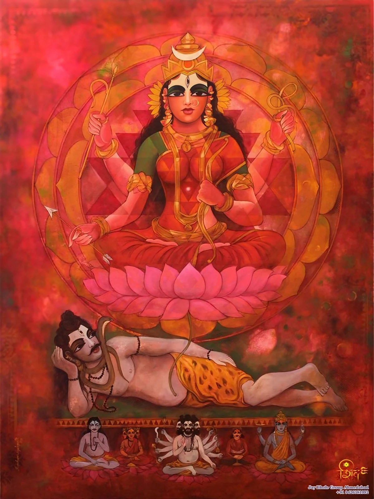
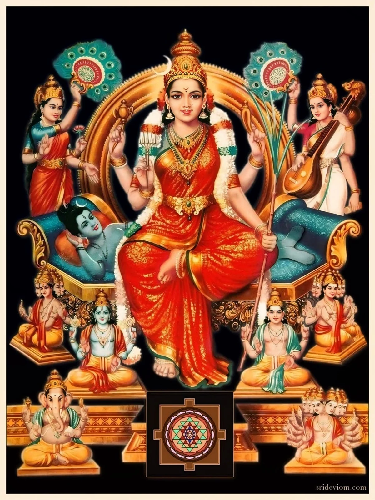
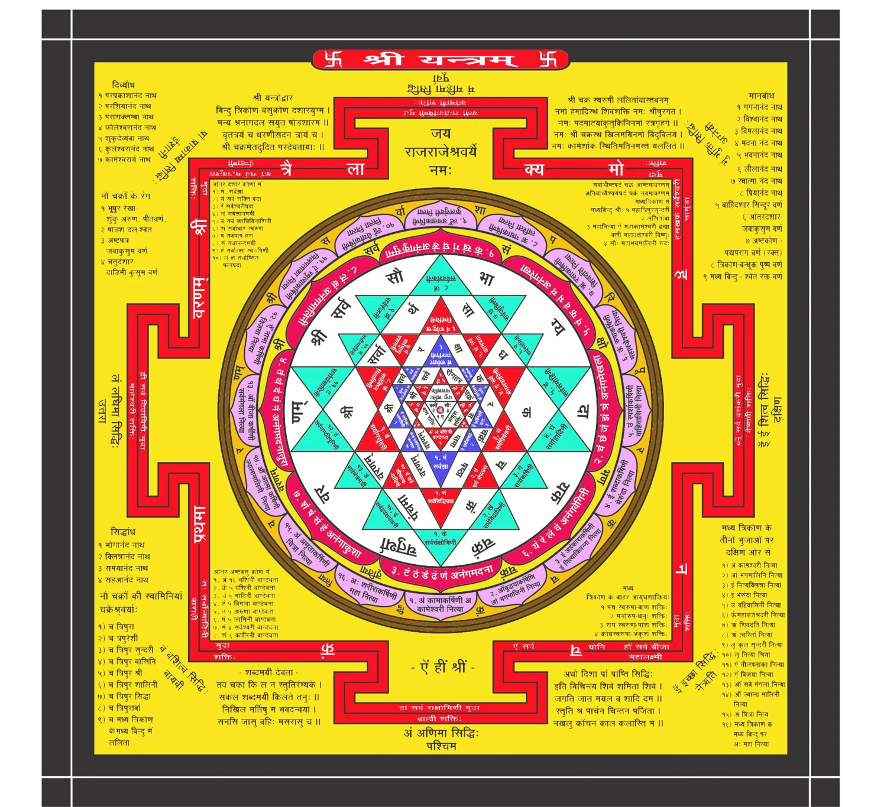

THE NAME AT THE HEART OF THE STORY
Lalita
The Mother whose manifestation and victory are narrated in the Lalita Mahatmya.
THE DIVINE MOTHER / A CLOSER LOOK
ललिता त्रिपुरसुन्दरी
The radiance of the Mother.
The sovereignty of the Divine.
Meet Lalita through sacred narrative, devotional imagery and the contemplation of Sri Chakra.

01 / THE DIVINE MOTHER
In the Lalita Mahatmya, she is praised as the source, support and resting place of the universe.
The devas address Lalita as the Mother of all, while also praising her as the reality beyond form and beyond the reach of words. The narrative brings together a radiant personal presence and an ultimate reality that cannot be contained in an image. [1]
This is a Shakta portrayal of the supreme Goddess. Other Hindu traditions explain divine relationships from their own perspectives; this page follows the sources named below.
THE NAME AT THE HEART OF THE STORY
The Mother whose manifestation and victory are narrated in the Lalita Mahatmya.
A NAME IN HER PRAISE
A name used in the gods’ hymn after Bhandasura’s defeat. [1]
WITH KAMESHVARA
The narrative also addresses her as Kameshvari and celebrates her union with Kameshvara. [1]
02 / HER DIVINE FORM
At her manifestation, the text describes Lalita with the lustre of the rising sun, red garments and a merciful glance. [1]

The distinctive bow named in the description of her appearance.
Five arrows accompany the bow in the same passage.
One of the four emblems held in her hands.
The goad appears both in her divine form and in the army narrative, where Sampatkari arises from it.
Textual description: Lalita Mahatmya 12.70–73; 16.7–10. Symbolic explanations may differ by commentary and lineage. [1]
03 / ENTER HER STORY
From Kama’s ashes to the manifestation of the Goddess. Follow Bala’s courage, Ganesha’s removal of an obstacle, and the victory that ends with restoration.
Read the illustrated story
04 / SRI CHAKRA
Sri Chakra is also called Sri Yantra. The supplied Bhavanopanishad commentary connects its contemplation with the body and the Self. [2]

The ArunaLahari commentary distinguishes external worship, internal worship and bhavana, or contemplative understanding. Its introduction relates the yantra and mantra to the body itself, and directs attention towards the Self as not different from Devi. [2]
In the Brahmanda Purana’s hymn, Lalita is praised in relation to the bindu, the central point. The story and the contemplative text offer different entrances into her sacred presence. [1]
This is the chart you contributed, shown intact. Its inscriptions belong to that particular diagram; the short introduction here follows the named textual sources.
05 / A DOORWAY INTO SRI VIDYA
An introduction to a tradition centred on Lalita, sacred mantra and Sri Chakra.
These subjects meet in the Bhavanopanishad commentary’s account of worship and the recognition of the Self. The commentary also gives an important place to the teacher in understanding the text. It presents a particular traditional interpretation, rather than a single explanation shared by every lineage. [2]
Your Srividyarnava Tantra edition adds a Sanskrit text with Hindi commentary to our reading collection. We will use clearly identified passages when developing the dedicated Sri Vidya pages. [3]
Explore Agamas & Tantras06 / WHERE TO BEGIN
Begin with the story, then follow the question that interests you.
Meet the Goddess through her manifestation, her companions and her victory over Bhandasura.
Read the storyTHE INWARD PERSPECTIVEExplore how the supplied commentary connects sacred form, contemplation and the Self.
See the source noteTHE TANTRIC TEXTA more detailed source in the collection, with Sanskrit text and Hindi commentary.
See the edition details07 / SOURCES & CONTEXT
Descriptions of the Goddess come from the Puranic narrative. The discussion of inward contemplation follows a named commentary. Future pages will keep those voices distinct.
CONTINUE EXPLORING